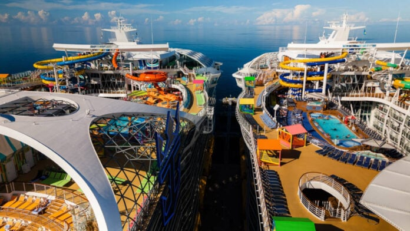

Explore the Joy of Cruising
Cruising offers an amazing way to travel combining luxury, relaxation, and adventure all in one experience. From Caribbean beaches to Alaskan glaciers, every cruise is an unforgettable journey.
Popular Cruise Destinations
- Caribbean Islands
- Alaska
- Mediterranean Sea
- Hawaii
- Baltic Sea
Photo Gallery

Experience Cruising
Watch this video to see why so many travelers love to cruise:
Why Choose a Cruise?
Cruising is more than just a vacation — it’s a lifestyle. You get to explore multiple destinations while only unpacking once, enjoy world-class dining, and meet people from around the world.